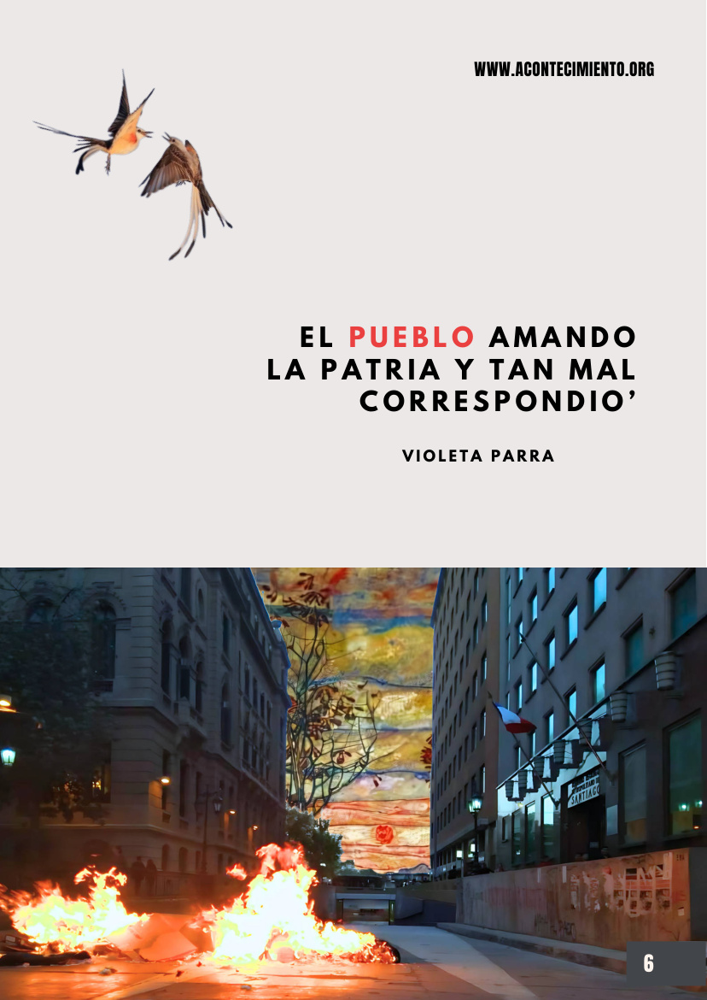

Las 176 medidas: lo que el mercado no va a decidir por Cuba
«Frente a las 176 medidas aprobadas por el gobierno cubano en junio de 2026, buena parte del debate público se organiza en torno a un falso dilema.»
Página de síntesis · Sección III
Internacionalismo fuerte: el fin de las identidades, en particular la nacional. El proletariado no tiene patria.
Aquí circula la discusión mundial y continental: lo que se juega en Cuba, la defensa del dólar, las voces borradas de Gaza, la unidad de los pueblos contra la agresión imperial, quienes cruzan fronteras convertidos en sospecha.
«Solo hay libertad real si nos desprendemos del fanatismo patriótico (…).»
— Boletín N°3 · Tiempos de libertad, contratapa · leer en el boletín
«La situación Palestina permite pensar una cuestión universal.»
— Boletín N°1 · Las potencias y la impotencia · leer en el boletín
La Idea del comunismo no son cuatro principios sueltos: son los cuatro anudados, o ninguno. Leemos este punto por separado solo para ordenar la discusión; la pregunta que queda siempre abierta es ¿qué pasa con los otros principios en este punto? Por ejemplo, lo que hoy ocurre en Burkina Faso con Ibrahim Traoré: avanza en elementos que podrían considerarse socialistas y, al mismo tiempo, castiga con cárcel la homosexualidad. Leído con los cuatro principios anudados, eso no es una contradicción retórica: es un diagnóstico.

«Frente a las 176 medidas aprobadas por el gobierno cubano en junio de 2026, buena parte del debate público se organiza en torno a un falso dilema.»
««El dominio del dólar es esencial», declaró el secretario del Tesoro, Scott Bessent…»
«Contra el imperialismo y la agresión trumpista, insistimos en la unidad de los pueblos latinoamericanos.»
«Un informe de 7amleh y la Universidad de Utrecht documenta 3.520 casos de restricciones a contenidos palestinos entre 2021 y 2025.»
«La situación Palestina permite pensar una cuestión universal. Nos posibilita mirar un orden…»